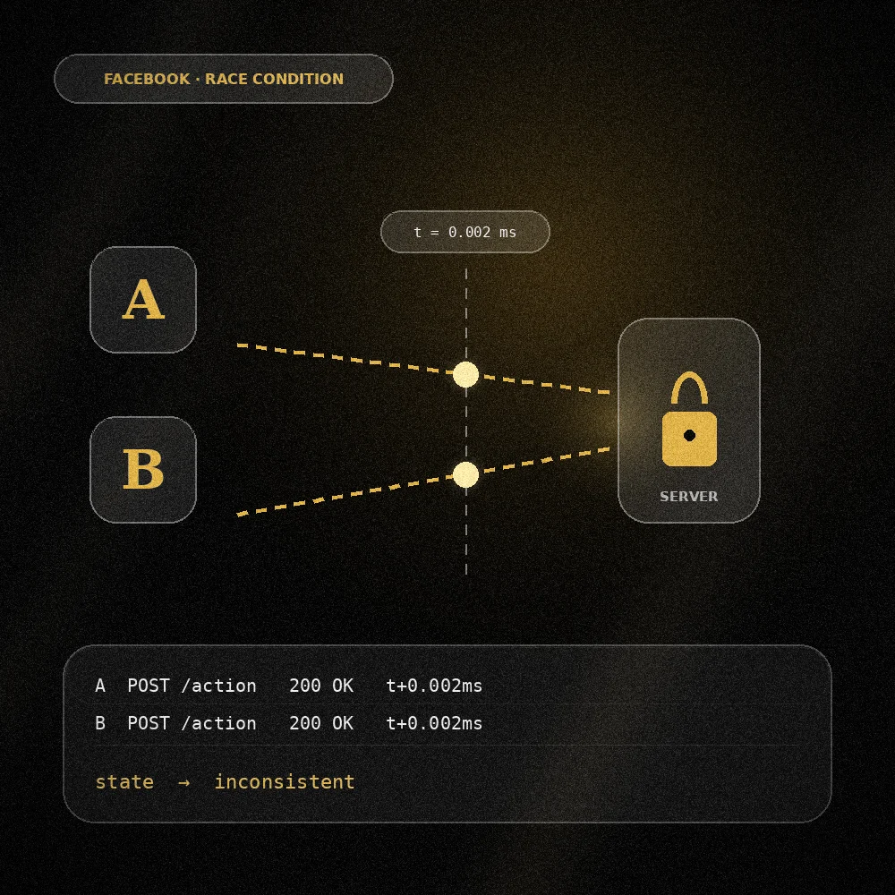

01 / RACE CONDITION
Facebook: Race Condition Vulnerability
- Finding
- A race condition in an email confirmation workflow.
- What I did
- Documented the issue and wrote a full technical report covering the exploit methodology and its impact.
- Outcome
- Highlighted by OffSec in March 2026.